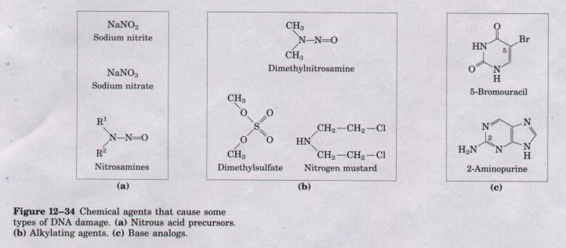
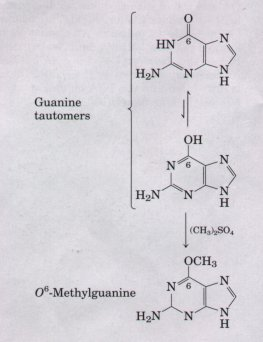
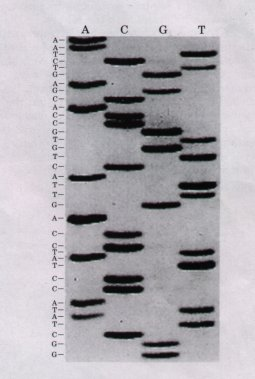
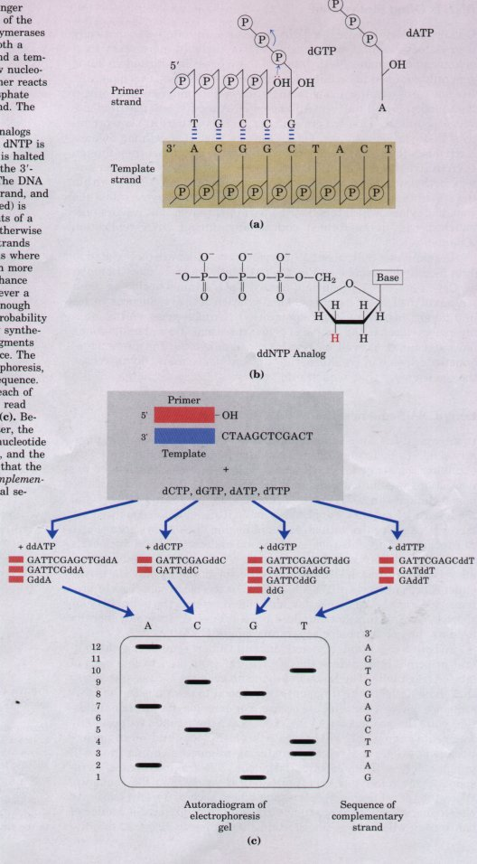
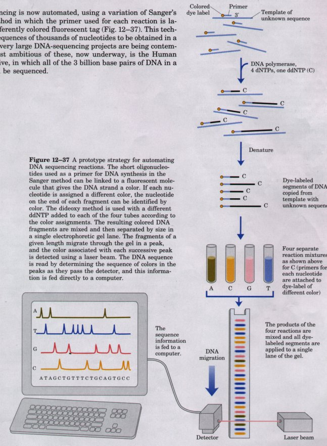
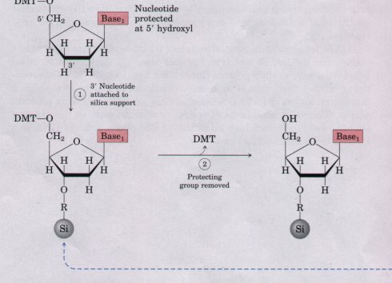
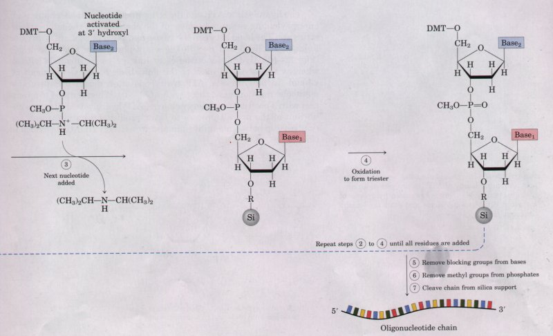

Other reactions are promoted by certain types of radiation. In the laboratory, UV light will induce the condensation of two ethylene groups to form a cyclobutane ring. In the cell, the same reaction occurs between adjacent pyrimidine bases in nucleic acids to form cyclobutane pyrimidine dimers. This happens most frequently between adjacent thymine residues on the same DNA strand (Fig. 12-33). A second type of pyrimidine dimer formed during LJV irradiation, called a 6-4 photoproduct, is also shown in Figure 12-33. Ionizing radiation (x rays and gamma rays) can cause ring opening and fragmentation of bases as well as breaks in the covalent backbone of nucleic acids.
Virtually all forms of life are exposed to energy-rich radiation capable of causing chemical changes in DNA. LJV radiation (having wavelengths of 200 to 400 nm), which makes up a significant portion of the solar spectrum, can cause pyrimidine dimer formation and other chemical changes in the DNA of bacteria and of human skin cells. There is a constant field of ionizing radiation around us in the form of cosmic rays, which can penetrate deep into the earth, as well as radiation emitted from radioactive elements, such as radium, plutonium, uranium, radon, 14C, and 3H. X rays used in medical or dental examinations and in radiation therapy of cancer and other diseases are another form of ionizing radiation. It is estimated that LTV and ionizing radiations are responsible for about 10% of all DNA damage caused by nonbiological agents.
DNA also may be damaged by reactive chemicals introduced into the environment as products of industrial activity. Such products may not be injurious per se, but may be metabolized by cells into forms that are. There are three major classes of such reactive chemical agents (Fig. 12-34): (1) deaminating agents, particularly nitrous acid (HNO2) or compounds that can be metabolized to nitrous acid or nitrites, (2) alkylating agents, and (3) compounds that can simulate or mimic the normal bases present in DNA.
 |
| Nitrous acid, formed from organic
precursors such as nitrosamines and from nitrite and
nitrate salts, is a potent reagent that accelerates the
deamination of bases described above. Bisulfite has
similar effects. Both agents are used as preservatives in
processed foods to prevent the growth of toxic bacteria.
They do not appear to significantly increase cancer risks
when used in this way, perhaps because they are used in
small amounts and their contribution to the overall
levels of DNA damage is minor. (The potential health risk
from food spoilage if these preservatives were not used
is much greater.) Alkylating agents can alter certain bases of DNA. For example, the highly reactive chemical dimethylsulfate (Fig. 12-34b) can methylate a guanine residue to yield O6-methylguanine, which is unable to basepair with cytosine. Many similar reactions are brought about by alkylating agents normally present in cells, such as S-adenosylmethionine (see Fig. 17-20) and other compounds. |
 |
Possibly the most important source of mutagenic alterations in DNA is oxidative damage. Excited-oxygen species such as hydrogen peroxide, hydroxyl radicals, and superoxide radicals arise during irradiation or as a byproduct of aerobic metabolism. Cells possess an elaborate defense system to destroy these reactive species, including enzymes such as catalase and superoxide dismutase. A fraction of these oxidants inevitably escapes cellular defenses, however, and damage to DNA involves a large, complex group of reactions ranging from oxidation of sugar and base moieties to breaking strands. Accurate estimates for the extent of this damage are not yet available, but it is clear that each day the DNA in each human cell is subject to thousands of damaging oxidative reactions.
This is merely a sampling of the best-understood reactions. Many carcinogenic compounds present in food, water, or air exert their cancer-causing effects by modifying bases in DNA. In the cell, the integrity of DNA as a polymer is nevertheless maintained better than that of either RNA or protein, because DNA is the only macromolecule having biochemical repair systems. These repair processes (described in Chapter 24) greatly lessen the impact of damage to DNA.
| Certain nucleotide bases in DNA
molecules are often enzymatically methylated. Adenine and
cytosine are methylated more often than guanine and
thymine. Methylation of these bases is not random but is
generally confined to certain sequences or regions of a
DNA molecule. In some cases the function of methylation
is well understood; in others the function is still
unclear. All known DNA methylases use
S-adenosylmethionine as a methyl group donor. In E. coli
there are two prominent methylation systems. One serves
as part of a cellular defense mechanism that helps to
distinguish the cell's own DNA from foreign DNA
(restriction modification, described in Chapter 28). The
other system methylates adenine to N6-methyladenine (see
Fig. 12-5a) within the sequence (5')GATC(3'). This is
mediated by an enzyme called the Dam methylase, which
functions as part of a system that repairs mismatched
base pairs formed occasionally during DNA replication
(Chapter 24). In eukaryotic cells, about 5% of cytosine residues are methylated to form 5-methylcytosine (see Fig. 12-5a). Methylation is most common at CpG sequences, producing methyl-CpG symmetrically on both strands of the DNA. The extent of methylation of CpG sequences varies in different regions of large eukaryotic DNA molecules, and is often inversely related to the degree of gene expression. These methylations have structural as well as regulatory significance. The presence of 5-methylcytosine in an alternating CpG sequence markedly increases the tendency for that sequence to take up the Z conformation. |

|
In its capacity as a repository of information, the most important property of a DNA molecule is its nucleotide sequence. Until the late 1970s, obtaining the sequence of a nucleic acid containing even five or ten nucleotides was difficult and very laborious. The development of two new techniques in 1977, one by Alan Maxam and Walter Gilbert and the other by Frederick Sanger, has made it possible to sequence ever larger DNA molecules with an ease unimagined just a few decades ago. The techniques depend upon an improved understanding of nucleotide chemistry and DNA metabolism, and on electrophoretic methods that allow the separation of DNA strands differing in size by only one nucleotide. Electrophoresis of DNA is similar to the electrophoresis of proteins (see Fig. 6-4). Polyacrylamide is often used as the gel matrix for short DNAs (up to a few hundred nucleotides). Agarose is generally used as the gel matrix for separating longer DNAs.
In both Sanger (dideoxy) and Maxam-Gilbert sequencing, the general principle is to reduce the DNA to be sequenced to four sets of labeled fragments. The reaction producing each set is base-specific, so that the lengths of the fragments correspond to positions in the DNA sequence where a certain base occurs. For example, for an oligonucleotide with the sequence pAATCGACT, a reaction that produces only fragments ending in C will generate fragments four and seven nucleotides long, whereas a reaction producing fragments ending in G will produce only a five-nucleotide fragment. The fragment sizes correspond to the relative positions of C and G residues in the sequence. When the sets of fragments corresponding to each of the four bases are electrophoretically separated side by side, they produce a ladder of bands from which the sequence can be read directly (Figs. 12-35, 12-36). The Sanger method (Fig. 12-36) is in more widespread use because it has proven to be technically easier. It involves the enzymatic synthesis of a DNA strand complementary to the strand to be analyzed.
 Figure 12-36 DNA sequencing by the Sanger (dideoxy) method. This method makes use of the mechanism of DNA synthesis by DNA polymerases (Chapter 24). DNA polymerases require both a primer, to which nucleotides are added, and a template strand to guide selection of' each new nucleotide (a). The 3'-hydroxyl group of the primer reacts with the incoming deoxynucleoside triphosphate (dNTPI, forming a new phosphodiester bond. The Sanger sequencing procedure uses dideoxynucleoside triphosphate (ddNTP) analogs (b) to interrupt DNA synthesis. When the dNTP is replaced by the ddNTP, strand elongation is halted after the analog is added because it lacks the 3'hydroxyl group needed for the next step. The DNA to be sequenced is used as the template strand, and a short primer (usually radioactively labeled) is annealed to it (c). By adding small amounts of a single ddNTP, for example ddCTP, to an otherwise normal reaction system, the synthesized strands will be prematurely terminated at locations where dC normally occurs. Because there is much more dCTP than ddCTP, there is only a small chance that the analog will be incorporated whenever a dC is to be added, but there is generally enough ddCTP that each new strand has a high probability of acquiring one ddC at some point during synthesis. The result is a solution containing fragments representing each C residue in the sequence. The size of the fragments, separated by electrophoresis, reveals the location of C residues in the sequence. This procedure is repeated separately for each of the four ddNTPs, and the sequence can be read directly from an autoradiogram of the gel (c). Because shorter DNA fragments migrate faster, the fragments near the bottom represent the nucleotide positions closest to the primer (the 5' end), and the sequence is read from bottom to top. Note that the sequence obtained is that of the strand complementary to the strand being analyzed. An actual sequencing gel is shown in Fig. 12-35. |

DNA sequencing is now automated, using a variation of Sanger's sequencing method in which the primer used for each reaction is labeled with a differently colored fluorescent tag (Fig. 12-37). This technology allows sequences of thousands of nucleotides to be obtained in a few hours, and very large DNA-sequencing projects are being contemplated. The most ambitious of these, now underway, is the Human Genome Initiative, in which all of the 3 billion base pairs of DNA in a human cell will be sequenced.
| Another technology that has paved the way for many biochemical advances is the chemical synthesis of oligonucleotides with any chosen sequence. The chemical methods for synthesizing nucleic acids were developed primarily by H. Gobind Khorana in the 1970s. Refinement and automation of these methods has made it possible to synthesize DNA strands rapidly and accurately. The synthesis is carried out with the growing strand attached to a solid support (Fig. 12-38), using principles similar to those used by Merrifield in peptide synthesis (see Box 5-2). The efficiency of each addition step is very high, allowing the routine laboratory synthesis of polymers of 70 or 80 nucleotides. In some laboratories much longer strands are synthesized. The availability of relatively inexpensive DNA polymers with predesigned sequences is having a powerful impact on all areas of biochemistry (Chapter 28). |  Figure 12-38 Automated synthesis of DNA is conceptually similar to the solid-state synthesis of,polypeptides. The desired oligonucleotide is built up on a solid support (silica) one nucleotide at a time in a repeated series of chemical reactions with suitably protected nucleotide precursors. (1). The first nucleotide (which will be the 3' end) is attached to the silica support at the 3' hydroxyl (through a linking group, R), and is protected at the 5' hydroxyl with an acid-labile protecting group (dimethoxytrityl, DMT). The reactive groups on all bases are also chemically blocked. (2). The protecting DMT group is removed by washing the column with acid (the DMT group is colored, so this reaction can be followed spectrophotometrically). (3). The next nucleotide is activated and reacted with the bound nucleotide to form a 5'-3' linkage, which in (4)?is oxidized with iodine to produce a phosphotriester linkage. (One of the phosphate oxygens is methylated. ) Reactions (2) through (4)?are repeated until all nucleotides are added. At each step, excess nucleotide is removed before addition of the next nucleotide. In (5) and (6)?the remaining blocking groups on the bases and the methyl groupg on the phosphates are removed, and in (7) the oli onucleotide is separated from the solid support and purified. The chemistry of RNA synthesis has lagged far behind the procedures for DNA synthesis because of difficulties in protecting the 2' hydroxyl of ribose without adverse effects on the reactivity of the 3' hydroxyl. |
